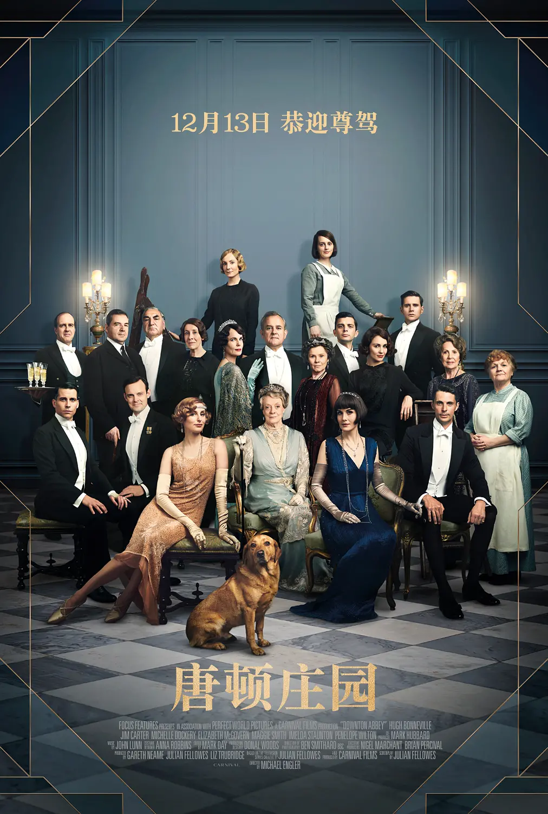
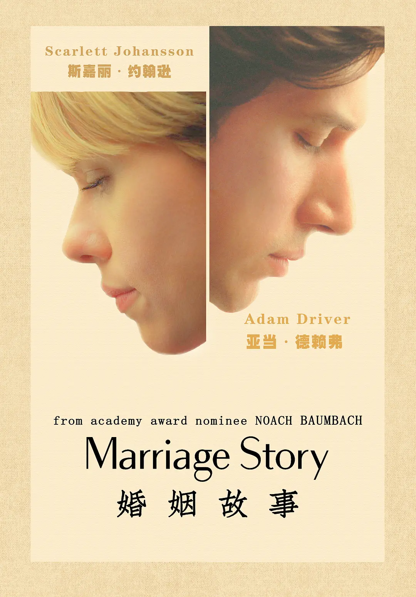

搜索
我看
购票
选电影
电视剧
音乐
影评
上映日历
收藏
正在热映
查看全部
小丑 Joker
(2019)
豆瓣评分:
8.8

唐顿庄园
电影版《唐顿庄园》讲述了新的故事：一向暗流涌动的唐顿庄园突然接到一封意外信件，英国皇室即将造访。
语言: 英语
片长: 120分钟(中国大陆)
豆瓣评分:
8.2
中国机长
机组执行航班任务时，在万米高空突遇驾驶舱风挡玻璃爆裂脱落、座舱释压的极端罕见险情，生死关头，他们临危不乱、果断应对、正确处置，确保了机上全部人员的生命安全，创造了世界民航史上的奇迹。
语言: 汉语普通话
片长: 111分钟
豆瓣评分:
6.9
爱尔兰人
通过二战老兵弗兰克·希兰的视角，讲述了战后美国有组织犯罪的故事。
语言: 英语
片长: 210分钟
豆瓣评分:
9.0
82年生的金智英
同名小说改编而成，直击韩国家庭和社会上的性别不公议题。
语言: 韩语
片长: 118分钟
豆瓣评分:
8.7

婚姻故事
以一起离婚事件探讨婚姻和爱情
语言: 英语
片长: 136分钟
豆瓣评分:
8.8
少年的你
陈念（周冬雨 饰）是一名即将参加高考的高三学生，同校女生胡晓蝶（张艺凡 饰）的跳楼自杀让她的生活陷入了困顿之中。
语言: 汉语普通话
片长: 135分钟
豆瓣评分:
8.3
高分电影
查看全部
小丑 Joker
(2019)
豆瓣评分:
8.8
哪吒之魔童降世
天地灵气孕育出一颗能量巨大的混元珠，元始天尊将混元珠提炼成灵珠和魔丸，灵珠投胎为人，助周伐纣时可堪大用；而魔丸则会诞出魔王，为祸人间。
语言: 汉语普通话
片长: 110分钟
豆瓣评分:
8.5
复仇者联盟4
一声响指，宇宙间半数生命灰飞烟灭。几近绝望的复仇者们在惊奇队长（布丽·拉尔森 Brie Larson 饰）的帮助下找到灭霸（乔什·布洛林 Josh Brolin 饰）归隐之处
语言: 英语
片长: 181分钟
豆瓣评分:
8.5
爱尔兰人
通过二战老兵弗兰克·希兰的视角，讲述了战后美国有组织犯罪的故事。
语言: 英语
片长: 210分钟
豆瓣评分:
9.0
82年生的金智英
同名小说改编而成，直击韩国家庭和社会上的性别不公议题。
语言: 韩语
片长: 118分钟
豆瓣评分:
8.7
婚姻故事
以一起离婚事件探讨婚姻和爱情
语言: 英语
片长: 136分钟
豆瓣评分:
8.8
少年的你
陈念（周冬雨 饰）是一名即将参加高考的高三学生，同校女生胡晓蝶（张艺凡 饰）的跳楼自杀让她的生活陷入了困顿之中。
语言: 汉语普通话
片长: 135分钟
豆瓣评分:
8.3
高分电视剧
查看全部
请回答1988
(2015)
豆瓣评分:
9.7
庆余年
某大学文学史专业的学生张庆熟读古典名著，但他用现代观念剖析古代文学史的论文命题不被叶教授所认可。
语言: 汉语普通话
集数: 46
单集片长: 45分钟
豆瓣评分:
7.9
老友记 第十季
乔伊（马特·理勃兰 Matt LeBlanc 饰）和瑞秋（詹妮弗·安妮斯顿 Jennifer Aniston 饰）的恋情维持不久就发现彼此不适应身体上的交往，决定只做朋友。
语言: 英语
集数: 18
单集片长: 22分钟
豆瓣评分:
9.8
生活大爆炸 第十二季
CBS和华纳电视部门正式宣布《生活大爆炸》将于第12季播出最终大结局，与所有观众告别。
语言: 英语
集数: 24
单集片长: 22分钟
豆瓣评分:
9.6
绝命毒师 第五季
故事紧接着上一季，通过一场精心策划的大爆炸，沃尔特（布莱恩·科兰斯顿 Bryan Cranston 饰）终于除掉了长久以来的威胁古斯塔沃（吉安卡洛·埃斯珀西多 Giancarlo Esposito 饰），也将古斯塔沃一手建立的毒品帝国连根拔起。
语言: 英语
集数: 16
单集片长: 45分钟
豆瓣评分:
9.6
无限挑战
聚集了7位韩国最有号召力的王牌综艺主持人,完成节目组给出的挑战
语言: 韩语
首播: 2005-04-23(韩国)
单集片长: 77分钟
豆瓣评分:
9.6
Running Man
节目通过组队游戏获取金币或running ball 最后决定胜者，输的一队将接受惩罚。
语言: 韩语
首播: 2010-07-11(韩国)
单集片长: 90分钟
豆瓣评分:
9.6
关于豆瓣
|
在豆瓣工作
|
联系我们
|
法律声明
|
帮助中心
|
移动应用
|
豆瓣广告
© 2005－2019 douban.com, all rights reserved 北京豆网科技有限公司